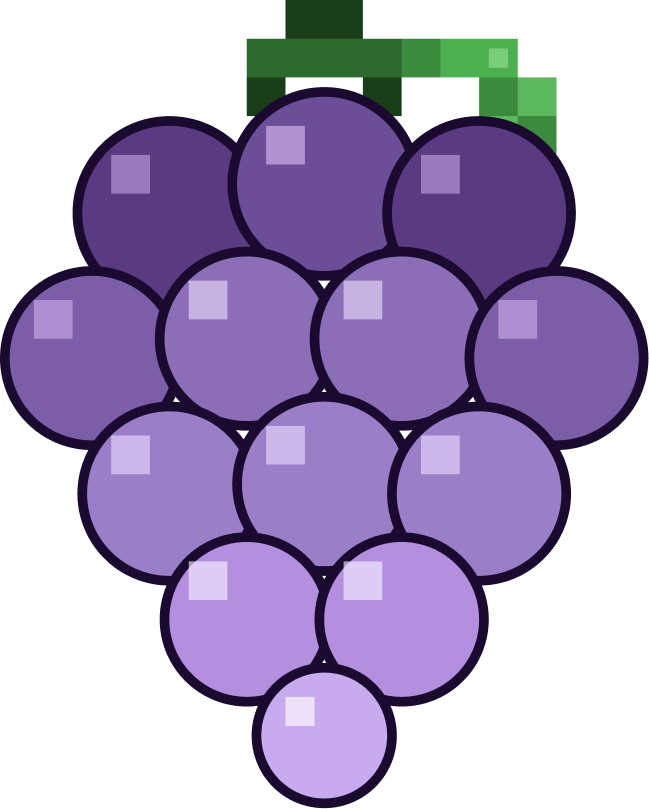

Pra Liz
A gente já conversou sobre você entrar de fato. Antes de formalizar, queria te mostrar o quadro inteiro: onde estamos, pra onde vamos, e em que vai o investimento que estou buscando agora. Sem pressa. Lê com calma.
Onde a gente está · maio/2026
Não somos pré-receita. Setup pago + recorrência entrando. Mas ainda concentrada — 89% do MRR vem de 1 cliente. Esse é um dos pontos que precisa virar nos próximos 6 meses.
Onde a gente vai estar · maio/2027
Trabalho com 3 cenários. O realista é a base de tudo — pricing, capacity, marcos. Conservador é o piso. Otimista exige tudo dar certo + você operando.
| Conservador | Realista | Otimista | |
|---|---|---|---|
| Clientes ativos em 12 meses | 6 | 10 | 14 |
| MRR final | R$ 18k | R$ 34k | R$ 50k |
| Receita total 12 meses | ~R$ 145k | ~R$ 270k | ~R$ 390k |
Pricing alvo a partir do próximo cliente: R$ 5–8k de setup + R$ 3–6k/mês. Quintal continua em R$ 250 (legado, primeiro cliente, aprendizado). Feito Chocolate entrou em R$ 2k/mês — mais perto do piso novo.
5 marcos no caminho
Não é só MRR e cliente. Tem 5 marcos que sustentam tudo. Você é parte direta de pelo menos 2 deles.
Quintal Brincante com painel de ROI ao vivo, acessível por link.
Sociedade no papel — você, eu, Claudia. Pré-requisito de qualquer captação.
Agentes internos rodando. Capacity sobe de 5 → 7-9 clientes ativos.
Conteúdo + outbound trazendo ≥30% dos leads. Sai da dependência de indicação.
3+ clientes da mesma vertical com processo replicável documentado.
O investimento que estou buscando
Sem salário fixo. Sem contratar gente nova além de você. Cada real entra em algo que multiplica a operação. Cada bucket abaixo é uma decisão consciente.
A maioria das startups pede dinheiro pra contratar. A gente não. Os 40% de Tecnologia & Infra constroem o time de IA que substitui contratação fixa — esse é o diferencial que defendo no pitch.
Quando o cheque se paga
Cenário realista: 8-10 clientes ativos antes do fim do ano. A receita acumulada cobre os R$ 120k antes de fechar 12 meses.
Receita bruta acumulada — cobre o cheque que entrou. O retorno em equity (pra quem investiu em troca de % da empresa) acontece depois, em 2–3 anos, com a próxima rodada.
Pra fechar
Você não está olhando isso de fora. Está olhando o que você vai ajudar a construir.